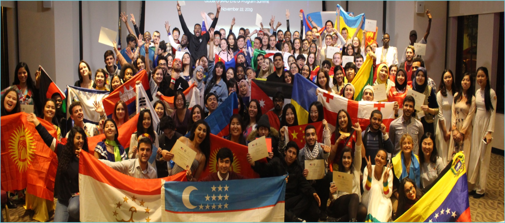
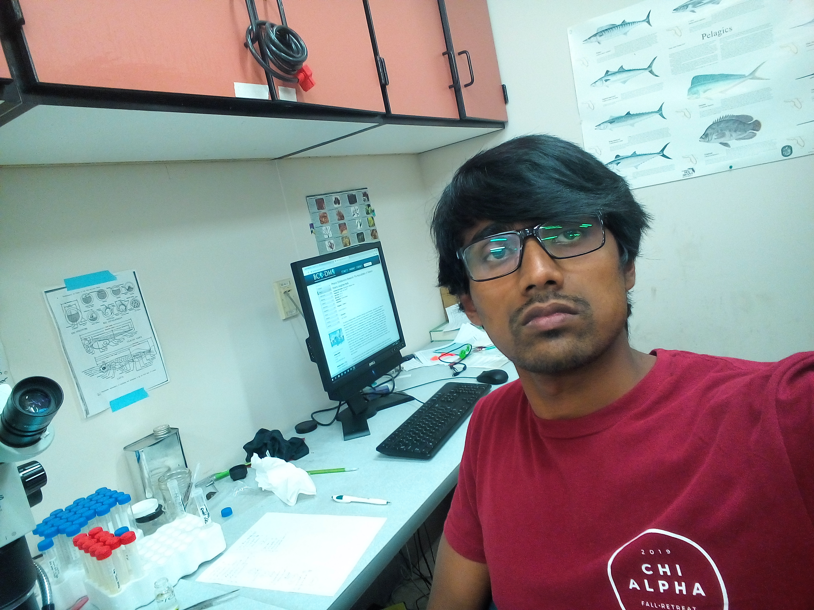
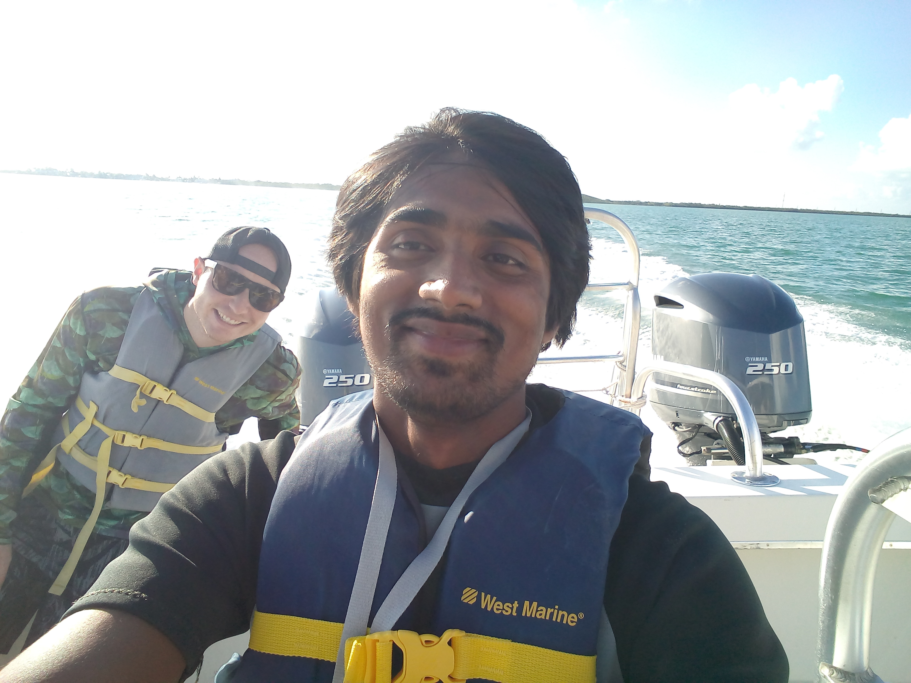

Hi, I’m Hafez Ahmad
Personal Website for Regular Writing, Training,and Teaching
Experienced in Project Management,Observational Oceanography,Marine Community Ecology, Geoinformatics, Wildlife habitat management, Hydrology and Remote Sensing,Strategic Planning, and Data Analysis , and problem solving with automation (Python, R, MATLAB, Julia, Google Earth Engine, ArcGIS, Adobe Illustrator, Excel).I am passionate about physical Oceanographic ,Marine Ecology, Aquatic wild habitats ,coastal Development Research and Machine learning . I will be happy to be part of your Research Groups.I have a Bachelor’s Degree in Oceanography from the Faculty of Marine Science and Fisheries, University of Chittagong ,Bangladesh and I was also an Exchange student at Florida Gulf Coast University, Florida, USAI am currently Graduate student at Mississippi State University,Mississippi, USA. More information about my Research and Activities can be found at Education section.
PROFESSIONAL SKILLS
| Soft Skills | Technical Skills |
|---|---|
| Research | Data visualization (M.S. Power BI, Tableau) |
| Communication | GIS, WebGIS and Remote sensing (ESRI, QGIS, ERDAS, SeaDas) |
| Team building | Scientific Programming (Python, R, Julia, MATLAB, SAS, C++) |
| Working collaboratively | Database (SQLite3/PostgreSQL) |
| Training & Development | Version control (Git, GitHub) |
| Problem resolution | Machine Learning and Deep Learning |
| People skills | Framework (TensorFlow, Scikit-Learn) |
| PPE use | Model (SWAT, EFDC, TR55) |
| Supervision Planning | Cloud (GEE, AWS, Azure) |
| Content Writing |
EDUCATION
Doctor of Philosophy (January 2024-December 2027) Department of Geosciences, Mississippi State University, Starkville, Mississippi, Expected Graduation in December 2027 - Major in Earth and Atmospheric Sciences - Coursework: Geodatabase, Philosophy and Ethics, GIS research applications, Quantitatively analysis climate data, Simulation Biological Systems. - GPA (4 for Spring, Fall 2024)
Master of Science (January 2022- December 2023) Department of Wildlife, Fisheries and Aquaculture, Mississippi State University, Starkville, Mississippi, Graduated in May 2024 - Major in Wildlife, Fisheries, and Aquaculture - Thesis: Hydrologic connectivity between oxbow lakes and rivers within the Lower Mississippi Alluvial Valley - Completed coursework in Field remote sensing, R for Managing Wildlife and Fisheries Data, Advanced Remote sensing, Julia for Scientific Computing, Research Methods in wildlife and fisheries, Landscape ecology, Movement ecology, Academic research and writing, GIS programming, Regression analysis with SAS, Analyses of freshwater fish assemblage, and Research/thesis. - Outputs: Two publications (+ 3rd under revision), and one large scale dataset covering six states. - GPA 3.87
Bachelor of Science (Exchange- Fall 2019) Marine Sciences, Florida Gulf Coast University, Fort Myers, Florida, August 2019- December 2019 - Major in Marine Sciences - Completed coursework in Coastal Remote sensing GIS, Marine Ecology, Leadership - Dean’s List Honoree - 3.75 GPA

Global Undergraduate Exchange program, 2019.
Bachelor of Science (January 2015-December 2020) Oceanography, University of Chittagong, Chattogram, Bangladesh, January 2015-2020 - Major in Oceanography - Completed coursework in Applied Statistics, Applied Mathematics, Remote sensing of the oceans, Fluid dynamics, and Sediment transport, Modeling marine processes, Marine resources, Coastal morphology, Physical Oceanography, Chemical Oceanography, Biological Oceanography, Marine microbiology, Physics, Geophysics, Computer and programming, Environmental Management, Law of the sea, Research tools, Hydrography, Hydrocarbon exploration, and seismology, Navigation and seamanship, and Research methodology. - 3.65 GPA
My Professional Services
Current Role
Geosystems Research Institute (2024-2027) Graduate Research Assistant
Focus on leveraging cutting-edge remote sensing technologies and hydrodynamic modeling to contribute to surface-to-ground water quality assessment in the dynamic environment of the Mississippi Coastal region. Skilled in harnessing data from satellite sensors and drone imagery to derive meaningful insights into environmental changes. Adept at developing and implementing algorithms to process large datasets, enabling accurate analysis and interpretation of water quality parameters. Project
Previous Roles
Mississippi USGS Cooperative Fish and Wildlife Research Unit (2022-2023) Graduate Research Assistant
Research Internship (2022) Mississippi State University (MSU), Geosystems Research Institute (GRI), and United States Department of Agriculture (USDA)
Successfully completed a two-month research internship. Project
Wildlife Conservation Society (WCS) Bangladesh Program (Oct 2020 - Nov 2021) Marine Data Management Officer
WCS is a non-governmental organization headquartered at the Bronx Zoo in New York City, aiming to conserve the world’s largest wild places. WCS Bangladesh conducts cutting-edge wildlife science and shares new knowledge with local communities and government agencies through innovative outreach.
Responsibilities
| Task | Description |
|---|---|
| Entered data, quality check, summarized, GPX data extraction | Generated descriptive statistics for WCS BD marine databases in Excel and other software programs according to a standardized format. |
| Assisted with advanced data analysis and modeling | Generated maps and graphs for reports and presentations. |
| Marine Spatial Monitoring and Reporting Tool development | Focused on the Bay of Bengal region: SMART. |
| Ensured secure data storage and support documentation | Maintained data integrity and accessibility. |
| Developed Sharks and Rays ID guide | Created Standard Working Procedure for Data Collection. |
| Assisted with improving data collection, data entry, and image processing protocols | Developed new data analysis tools. |
| Compiled and reviewed secondary information | Developed MPA management plans, species assessments, and marine spatial plans. |
| Provided support to the Marine Conservation Team | Assisted other WCS BD programs as necessary. |
Geosystems Research Institute (May 2023 - August 2023)
Joined an elite group of eight students from different academic backgrounds and universities across the United States to work with a High-Performance Computer (aka Supercomputer) for cutting-edge machine learning projects. This incredible opportunity allowed us to tap into the immense power of supercomputers and foster collaboration and innovation among bright minds from diverse fields. Together, we pushed the boundaries of computing and drove groundbreaking advancements in our respective areas of expertise.
My project focused on classifying cattle behavior using machine and deep learning techniques with the aid of High-Performance Computing facilities. Project link

Professional Membership
- The Oceanography Society (Student member)
- American Fisheries Society Mississippi State Sub-unit (Secretary-2022)
- IEEE Student Membership
- Blue Green Foundation Bangladesh (Founding member)
- Wildlife Conservation Society, Bangladesh
Field Work in the Keys Marine Laboratory, Florida, USA

The Keys Marine Laboratory (KML) is a full-service marine field station situated in the heart of the Florida Keys. I spent three days there conducting fieldwork, lab work, and research under the supervision of Dr. Douglass. We dived into the Gulf of Mexico and the Atlantic Ocean, identifying seagrass, marine fishes, and coral reef species.
Working in the Marine Ecology Lab
This is Dr. Douglass’s Ecological Lab. I spent about 86 hours in the Fall 2019 semester working on benthic samples and sorting with four graduate students from Florida Gulf Coast University.

Leadership Program
The Social Leadership Hackathon is a half-day workshop where students from diverse backgrounds come together to learn and exercise leadership to solve a problem in their community. Participants work in small groups to focus on a particular local problem and create an action plan to solve it.

Atlantic Ocean
I love the ocean and its weather. I had the opportunity to dive into the Atlantic Ocean.
